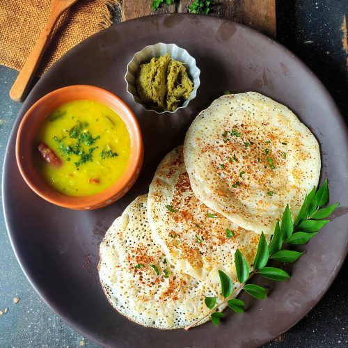

Soft and Spongy Set Dosa

Set Dosa is a soft, spongy, and thick dosa variety from South India, traditionally served in sets of two or three, typically with chutney and sambar. It is a popular breakfast option and is often made with a rice and urad dal batter that is fermented overnight. Here's how you can make it at home:
Ingredients:
- For the Batter:
- 1 cup rice
- 1/4 cup urad dal (split black gram)
- 1/4 teaspoon fenugreek seeds
- Salt to taste
- Water (for soaking and grinding)
- For Cooking:
- Oil or ghee for greasing the dosa pan
Instructions:
-
Soaking Ingredients:
- Wash and rinse the rice and urad dal separately a few times to remove any impurities.
- Soak the rice, urad dal, and fenugreek seeds in water for about 4-6 hours or overnight.
-
Grinding the Batter:
- Drain the soaked ingredients and transfer them to a wet grinder or blender.
- Grind the rice and dal mixture to a smooth batter, adding water as needed to get a thick but pourable consistency.
- Transfer the batter to a large mixing bowl, cover it, and let it ferment in a warm place for 8-10 hours or overnight until it doubles in volume.
-
Making the Dosa:
- Heat a non-stick pan or cast iron tawa over medium heat. Grease it lightly with oil or ghee.
- Take a ladle full of batter and pour it onto the pan, spreading it slightly to form a thick circle.
- Cover the dosa and cook for about 2-3 minutes. The edges will begin to lift, and the dosa will turn golden brown on the bottom.
- Flip the dosa and cook the other side for 1-2 minutes until lightly golden.
-
Serving:
- Serve the Set Dosa hot with coconut chutney and sambar. Traditionally, two or three dosas are served together in a set.
Enjoy!
Set Dosa is a comforting and satisfying dish perfect for breakfast or dinner. The soft and spongy texture pairs beautifully with chutney and sambar for a complete meal. 😊